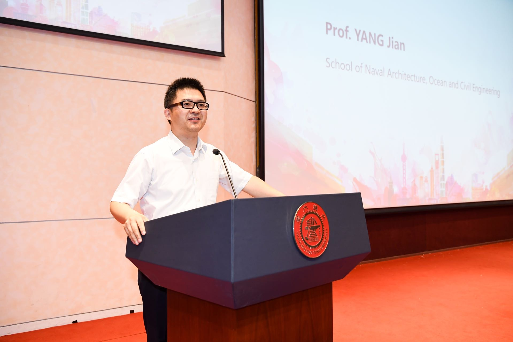
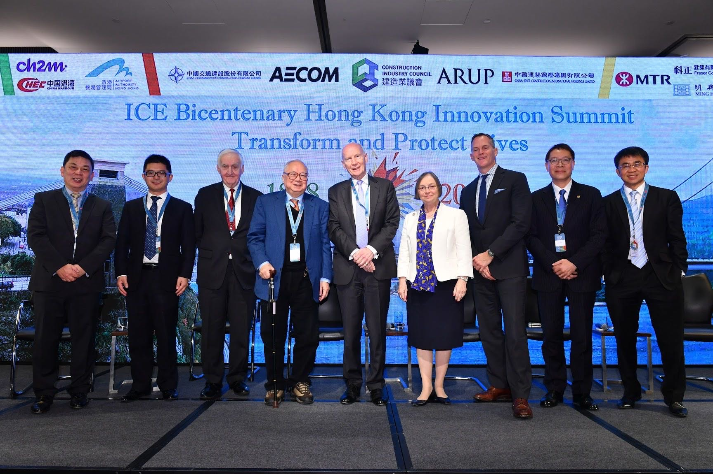
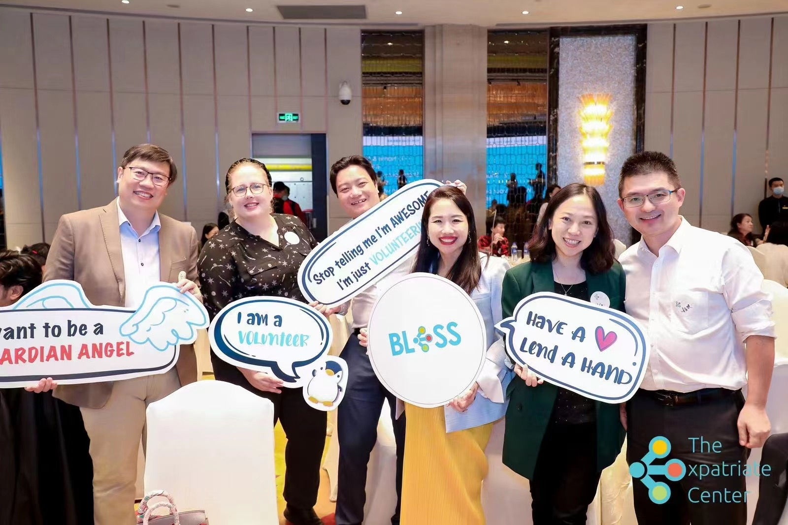

China
Tenure Professor in Civil Engineering
Deputy Dean of School of Naval Architecture, Ocean and Civil
Engineering (Undergraduates & International), Shanghai Jiao Tong
University
Dr. Jian Yang has over 20 years of experience of teaching, research
and consultancy at various universities in the U.K. and China. His
research interests fall into the fields of green building materials
and construction, smart construction and digital innovations. He has
supervised more than 50 PhD/Master students from various countries in
the world. In his present role, he is leading a team of 30
researchers.

He is a Fellow of Institute of Civil Engineers (FICE) and a chartered
member of the Institute of Structural Engineers (MIStructE). He serves
on several international and national professional committees, e.g.
IStructE, ICE and Chinese Ceramic Society. He sits on the editorial
boards for 4 international peer reviewed journals. He is the PI of
over 30 grants and has published nearly 200 peer reviewed journal
papers attracting more than 4000 citations.

“While living in the UK for more than 15 years, both my family and
myself understand the difficulty as foreigners. We are so grateful for
the enormous assistance and supports from communities. After we came
back Shanghai, we participated in many activities organized by TEC
such as forums on cutting edge subjects organized by many volunteers.
TEC is such a warm community and I am more than willing to be its
volunteer with a view of offering help to other foreigners living and
working in Shanghai. Shanghai is an international and world-friendly
city, embracing cultural and national diversity. Everyone feel at home
living here.”
